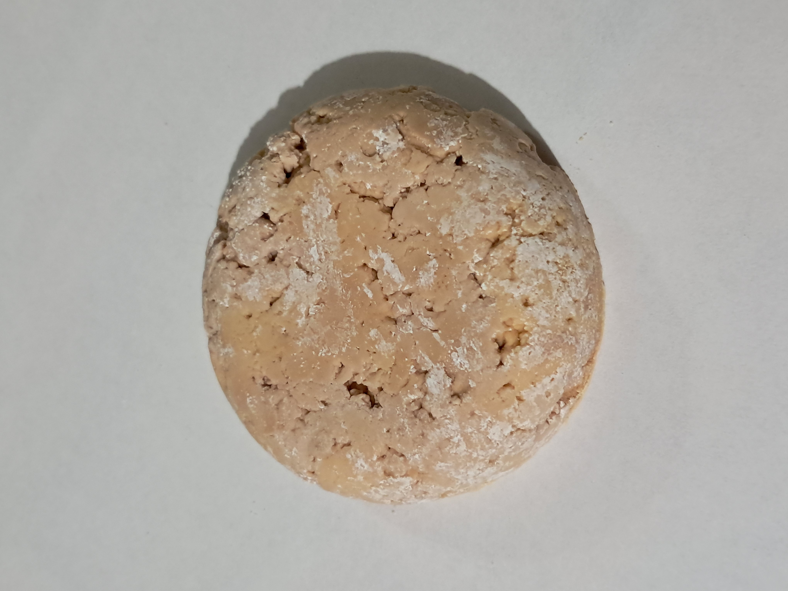
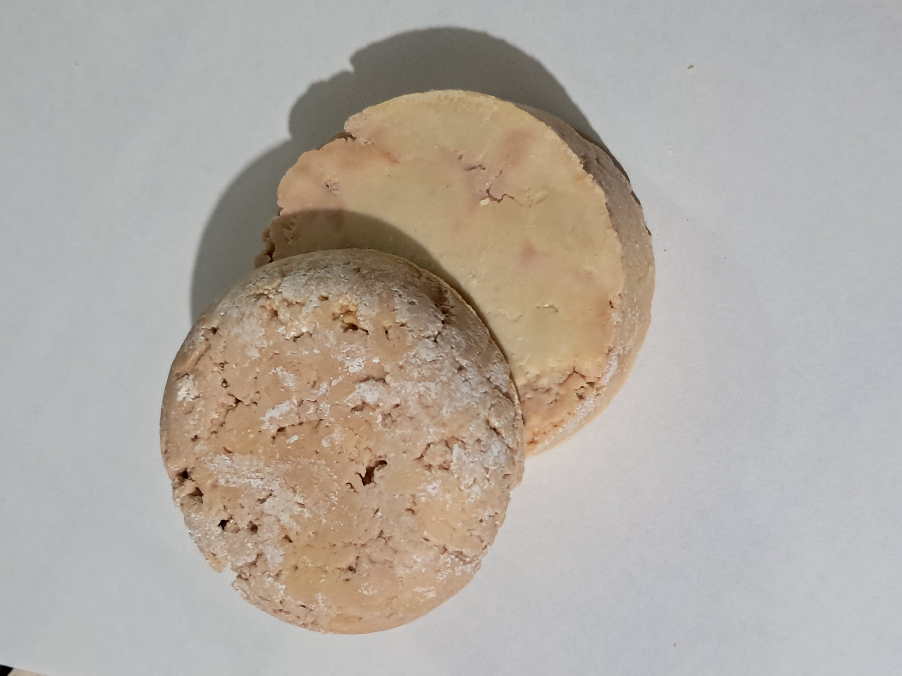
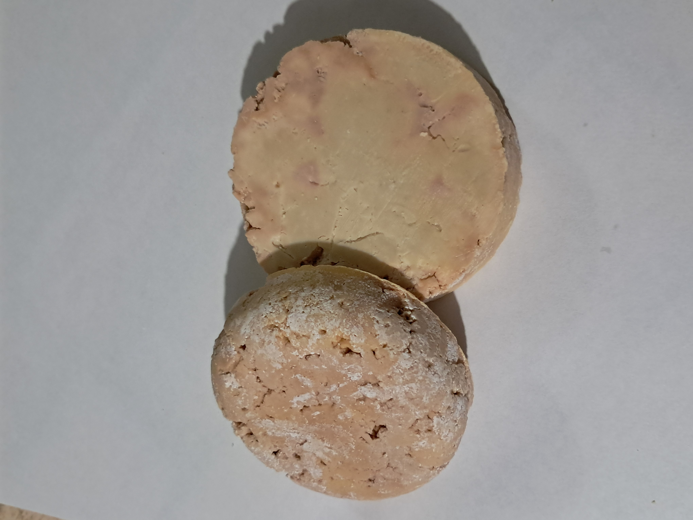
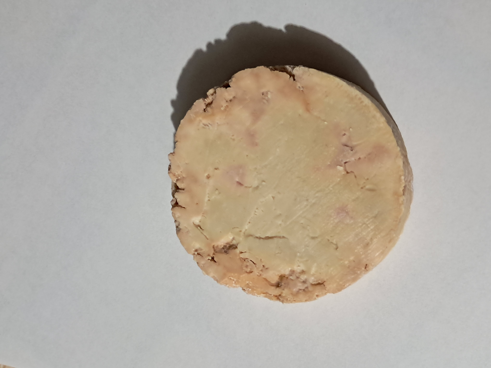

Aceite usado
125 mL de aceite de girasol usado y filtrado.
Elaboramos jabón artesanal mediante la saponificación de aceite de girasol usado. Una iniciativa hecha por nosotros para aprovechar un residuo y transformarlo en un producto para el lavado de ropa.
CONOCE NUESTRO PROYECTO
Nuestro proyecto parte de una pregunta: ¿qué podemos hacer con el aceite de cocina después de utilizarlo?
El aceite de cocina usado puede causar problemas cuando se vierte por el desagüe. Por eso, buscamos una alternativa para aprovecharlo como materia prima en la elaboración de jabón sólido.
Mediante el proceso de saponificación, desarrollamos un prototipo artesanal destinado al lavado de ropa. La propuesta también nos permitió estudiar el aprovechamiento de residuos y la economía circular.
Datos registrados durante la elaboración experimental descrita en nuestro proyecto.
Cantidades reportadas para el ensayo experimental.
125 mL de aceite de girasol usado y filtrado.
50 mL de solución de hidróxido de sodio al 50 %.
31 mL de alcohol (etanol).
2 mL de esencia.
Acondicionamos el aceite y preparamos la mezcla para obtener nuestro prototipo sólido.
Obtención del aceite de girasol usado para aprovecharlo como materia prima.
Retiro de restos sólidos e impurezas presentes en el aceite.
Medición de los ingredientes utilizados en el ensayo.
Mezcla de los componentes para llevar a cabo la reacción.
Reposo de la preparación hasta obtener una consistencia sólida.
Secado al aire libre antes de evaluar el producto obtenido.
El ensayo permitió obtener un producto sólido y reconocer aspectos que pueden mejorarse en futuras pruebas.

Fotografías reales del prototipo elaborado por nuestro equipo.


La propuesta se relaciona con la economía circular y el ODS 12: producción y consumo responsables.
Dar un nuevo uso al aceite de cocina después de su utilización.
Promover la disposición adecuada del aceite usado y evitar su vertimiento por el desagüe.
Explorar la transformación de un residuo en un producto útil para la limpieza.
Elaborado por nosotros a partir del aprovechamiento de aceite de girasol usado.